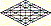

The Families of Adam
There is only one Life.
| In the Garden of Eden, the Breath of Life was
invested as the Life Spark a
in the blood
md of Adam , the first man
mda ,
and it has been passed and shared among us all, untold times. Through
its projection, that Life Breath,
and the spark of divine fire it carries, has warmed our bloodstreams by
positioning its energies within the thick darkness of the
physical body's cellular
structure. The Life Spark is Immanuel: God within us; and the
mortal
breath of man is strong argument for the existence of God, a greater
reality; for, ultimately, it answers to power that's
beyond our control. We can sometimes affect the mechanics of
breathing, but the magic of breath is absolutely beyond us. The Breath is both Life and the power to enliven, and the holy fire of the Life Spark is never absent from any of us, so long as we breathe. When we die, the Life Spark returns to the Father of Life on the wings of his Breath, carrying with it the ember of who we are and what we are becoming, as was known from the beginning: not that we did not have free choice; we did, but our choices took us to the places God foresaw and to the strictures and remedies he prepared. As we move forward in our lives, we're sustained by the Breath's Presence as we inhale; and we return to the Father the savor of our use of his Breath and its Spark of Life, in the symbolic deaths of the exhale. Y'shua-- Jesus, if you like: we are not to make a man an offender for a word; for that name both masks and amplifies Truth-- a wise man spoke of the Wheel, and of the need to keep our shoulders against it. Ask the men of the East of the Wheel, and they will wonder how it could be a mystery to men of the West. The man Jesus taught about the Wheel of Lives, even as Torah's tree of life in the Garden of Eden is written as the Tree of Lives. I think short-sidedness has come upon the West to underscore a still greater mystery: there is a difference between transmigration of souls and the transmutation of souls. Imperfect souls die, but awakened souls need not perish to be reborn: new lives can start with any breath, whenever sleeping souls awaken. The ritual of water baptism is just that: a symbolic ritual. It's up to men, whether another can be baptized in water, whereas the birth of the new creature of which it is symbolic is not. Some emerge from the water in fulfillment of all righteousness, but a great many arise with the very devil grabbing at their heels. Yet others receive baptism in the Breath without ever having heard of baptisms of any kind. And concerning water baptism, it's faith that saves, not willingness to be baptized. If it's faith that brings us to baptism, we're not saved in perfection, but unto perfection; and should we come to water baptism by any other understanding, then we are fulfilling all righteousness with unrighteousness; for error persists. No. It's the Breath that must lead us, down, to water; for it's the Breath, as Finisher of our faith, that arises from the water with the embryonic saint, renewing our souls as it accompanying us on the path to perfection, where we must persist in the childbearing of our hearts and minds. We are to be perfected-- not only saved, but perfected! Through the process of salvation, we are to become worthy of the forehead seal first received by Y’shua. If we're not yet ready for the forehead seal some call the circle of light, we progress by grace upon the path of Y'shúa in the seal of the Father’s hand. At rest and secure in the hand of hy Yah , we are readied for those works entrusted to our own hands through Yahushúa, the interface between God and creation. Nod is a land of wanderers—of sojourners; for it swallows both the disinherited family of elder Cain and the chosen remnant of the family of Adam, the only-begotten Son of God. The Chronicles of Nod is based on an unusual reading of a holy text, but it is not a private interpretation. My intellect did not contrive it. Like Mohammed, I invite those who doubt its sincerity to try contriving such a text for themselves. Its narrative treats of the Life we share together as we travel the Land of Nod together, in this present day. It's strengths praise The Name, as does my weakness in expressing what I write. Frankly, it's amazing that work with any merit should come through such a one as me. |
|
site |
130 Year | bookmenu |